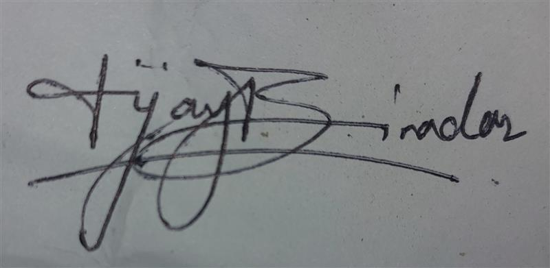

800+
ETL PIPELINES OWNED

Most engineers wait to be told. I go looking for the failure nobody has flagged yet — the monitoring gap, the manual recovery, the fragile handoff — and I own it before it becomes an incident. Leadership isn't a title somebody hands you. It's the work you pick up first.
Three years inside a manufacturing data platform taught me that reliability isn't a feature you add — it's a discipline you build into everything from day one. I own 800+ ETL pipelines and 30+ data products across plants in Germany and India, but the work I'm proudest of is the stuff nobody asked for: Vortex, an engineering intelligence platform I built because the team needed governance and lineage before they knew to ask for it.
An enterprise engineering intelligence platform built from scratch because governance and lineage were nobody’s job. Five MCP servers, 30+ repository integrations, AI-assisted analytics over the whole estate.
Classifies a failure, retries it, validates the output, and only escalates when the classification says fatal. Recovers 3–5 failed executions a day with nobody touching them.
Automated ETL health checks, alerting and dashboards across 800+ pipelines — turning reactive firefighting into something you can see coming. ~75% less manual monitoring.
A medallion architecture — bronze, silver, gold — with MCP integration so business analytics can be asked in plain language instead of SQL.
Led the data engineering workstream. Zero pipeline failures, zero business disruption — the kind of quiet win nobody notices unless it goes wrong.
Became the person called first when something looked wrong in production — then made it repeatable, introducing AI-assisted code review that catches leaked secrets, vulnerable dependencies and compliance gaps before they ship.
~82% prediction accuracy using ML classification and feature engineering on clinical questionnaire data, built for early screening where clinical access is limited.
Top 5 of 100+ teams. A CNN hitting ~87% accuracy across 1,000+ labelled leaf images, cutting misclassification by roughly 20% against the baseline.
For sustained reliability engineering across the pipeline estate — the unglamorous work of keeping 800+ pipelines boring.
For integrity in engineering practice and decision-making.
For continuous learning and technical curiosity across the platform and AI tracks. The one that fits best.
Visvesvaraya Technological University (VTU), Mysuru, India.

The instinct to fix what's broken before it's flagged didn't start at Daimler. Since 2017, I've led a family-founded NGO's community programs — vaccination drives, health camps — reaching 100+ people a year, and rebuilt its coordination from scratch to cut overhead by roughly 80%. Same pattern: find the friction, remove it, move on. A black belt in Goju-Ryu taught me the other half — that showing up consistently, for years, matters more than any single breakthrough. I'm currently terrible at violin, which is its own useful lesson in patience.
I read systems and books the same way — looking for the structure underneath.
Drawn to the ones about discipline, strategy, and refusing to stop.
Where I go to stop thinking about pipelines for a while.
The road is where I think. Nothing to debug, nowhere to be, no screen.
Learning it as an adult, badly and in public. Worth being a beginner at something.
Black belt. Years of showing up to the same dojo floor.
Women & Children Welfare Association since 2017. Vaccination drives, health camps, awareness campaigns; digital coordination cut logistical overhead ~80%.
Hover for the handle. Discord copies on click.

Vijay Biradar